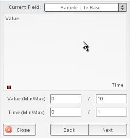

Figure 1
Particle Effect Editing
| In order to edit a particle effect, you must create an instance of the particle effect in the Scene View. To do this, drag the particle into the Scene View from the Particle Effect section of the Create tab. (Figure 1). Notice that you can see the particle effects animating in the Create tab when you hover the mouse over them. |
Figure 1 |
|
 Figure 2 |
The main function of the particle effect object is to manage particle
emitters, which actually generate the particles that you see on the
screen.
To edit a particle emitter, click on the Emitter sub-rollout in the Particle Effect (Figure 3).

Figure 3
| As you can see, this rollout contains many emitter properties and also contains an Edit Graph button of its own. In order to edit this emitter's graph, press that button. You will see the emitter graph. (Figure 4) |
 Figure 4 |
Below the graph you should see
a min and max setting, and a time setting. The min and max settings
allows users to configure the minimum and maximum values (y-axis) shown
in the view. The time allows users to define the span of time that they
are viewing (x-axis).
Graph points can be moved (mouse drag), added
(mouse click), or removed (double-click) in this graph. There are a
number of fields that can be edited using this graph. The Current Field
dropdown lets you choose which one you want to work with. Size X Life (Figure 5) is
a good one to start with, since its effects are obvious... it changes
the size of your particles.
For more information about the different
fields, see the particle reference document.

Figure 5
Because particle effects are saved separately from your overall level, when you are done editing an effect, go back to the Particle Effect rollout and click Save.